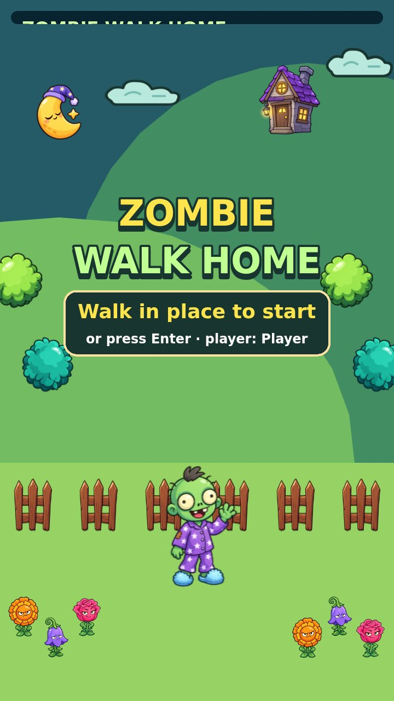
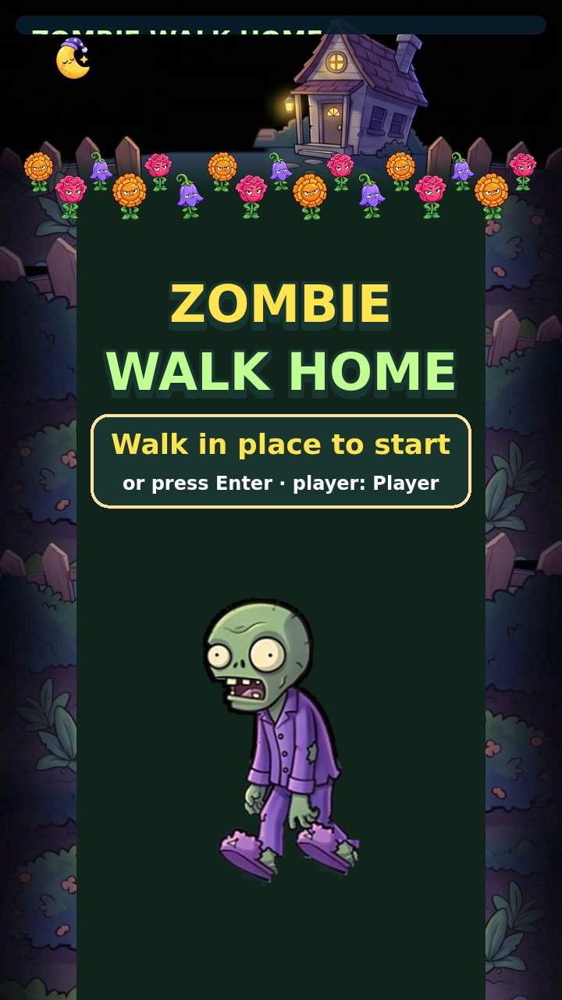
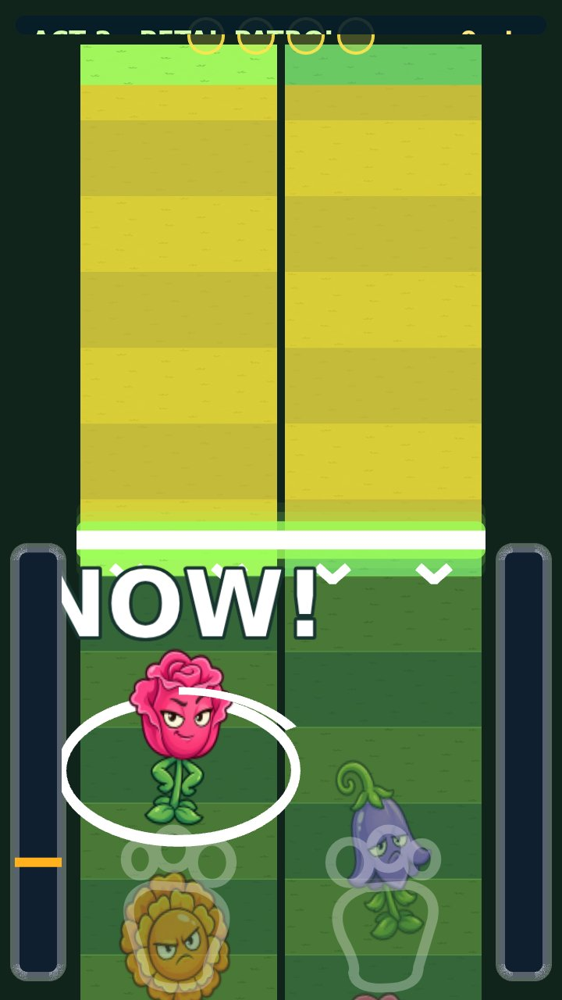
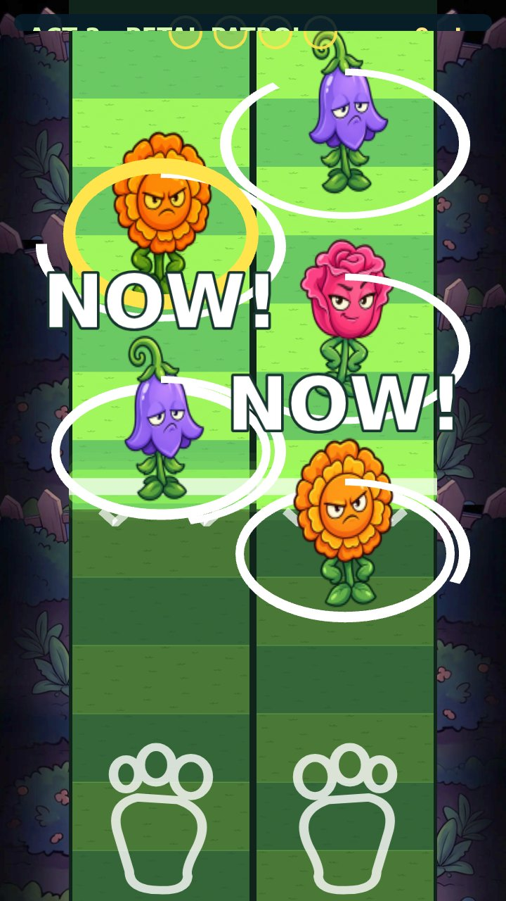
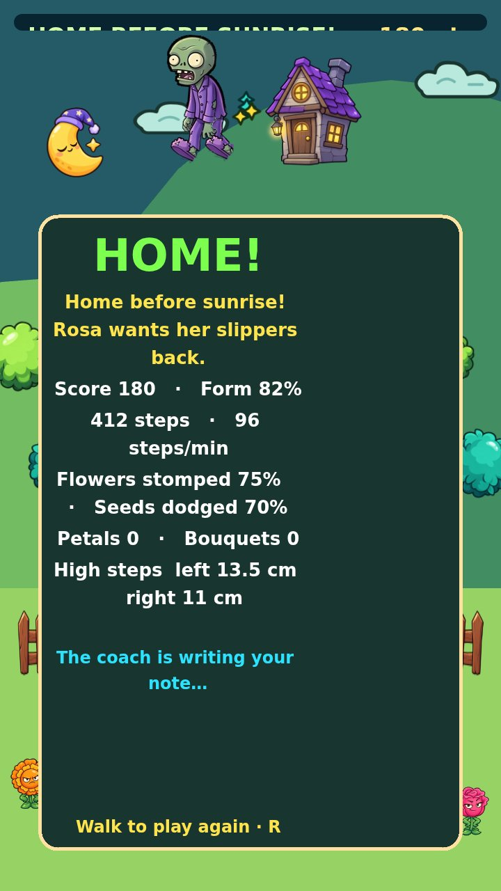
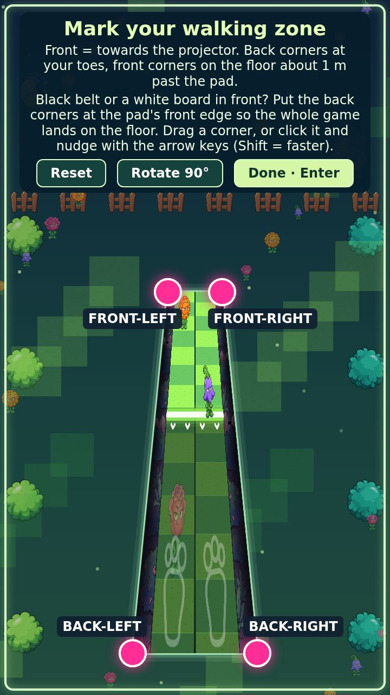

Ничего из этого не в игре на проекторе. Ветка art/pvz-look на GitHub. Ответь по каждому пункту «Решение»: цифра варианта или «переделать: …».
1. Было → стало

Старт, было. Яркий фон книжки, старый Гас.

Старт, стало. Дом с грядкой цветов, забор и огород по краям, зомби из концепта.

Поле, было. Метры по бокам.

Поле, стало. Две дорожки, забор и огород, без метров. Подсказки READY / NOW!, лепестки сверху.

Финиш. Пока старый фон, новый зомби. Две концовки ниже, пункт 4.

Разметка зоны (Z). Забор виден и здесь.
Решение 1 арт
Забираем это в игру?
Да, как есть.
Да, но забор по краям темнее / светлее (напиши).
Зомби оставить, забор убрать.
Переделать: …
Что знаю заранее: на чёрном полотне тёмные края забора почти пропадут, останутся светлые штакетины и цветы. Это нормально: главное, что дорожки и цветы ярче всего остального.
2. Палитра для тусклого проектора
Чёрное полотно съедает всё тёмное. Ниже те же цвета на чёрном: что видно, то и будет на полу.
#ffe44d жёлтый
#9cff5a лайм
#2de2ff циан
#ffffff белый
#ff5fa2 розовый
#ffb21e янтарь
#ff9a1f оранж
#9b6bff фиолет
#295d45 зелень фона
#19352f тёмная зелень
#3a2a4a ночь концепта
Решение 2 палитра
Правило для пола: яркое и насыщенное только для того, на что ступают и что нужно прочитать (цветы, линия, подсказки, лепестки); всё остальное (забор, огород, дом) тёмное и тусклое, как декорация. Согласен?
Да.
Хочу ярче декорации, пусть мешают.
Переделать: …
Отчёт исследования по проекции на тёмную поверхность добавлю сюда, как только он придёт (минимальная толщина линий, размер текста, какие цвета пропадают).
3. Вступление перед ходьбой
Раскадровка игровой кат-сцены на Phaser из вырезок концепта (видео-генератора в этой сессии нет). Пропуск по Enter или по первому шагу. 10–12 секунд.
Ночь, дом. Дом с тёплыми окнами, луна, забор. Бабушка Роза у калитки с лейкой. Текст на полу: «Роза защищает свой огород».
Цветы оживают. Грядка цветов с сердитыми лицами вырастает по дорожке, подпрыгивают. Текст: «Её цветы кусаются».
Гас. Зомби в пижаме выходит снизу, топает по цветку, лепестки взрывом. Текст: «Наступай на цветы, чтобы дойти до дома».
Старт. Камера отъезжает на две дорожки, линия загорается. Текст: «Иди на месте. Шаг, шаг, цветок».
Решение 3 вступление
Делать кат-сцену на Phaser по раскадровке.
Ты генерируешь видео в Higgsfield по моему промпту, я встраиваю mp4 (нужен файл до 30 МБ).
Без вступления, только стартовый экран.
4. Две концовки
По результату терапевтических задач: темп ≥ минимума большую часть времени, обе ноги ровно, попадания ≥ 60 %.
Хорошо: «Дошёл домой»
Гас доходит до двери, окна зажигаются одно за другим, Роза машет с крыльца, лепестки-конфетти, надпись HOME! и счёт. Голос коуча: «Отличная прогулка». Озвучка позже.
Плохо: «Цветы поймали»
По-детски: цветы обвивают Гаса за тапки, он застревает на дорожке, вздыхает, надпись «Цветы победили… завтра дойдём!» и три совета коуча. Без «смерти», без крови.
Решение 4 концовки
Да, обе как описано.
Плохую концовку жёстче («Гаса съели»).
Только хорошая концовка.
5. Что ещё заметил
На новом поле подсказки NOW! огромные (110 px): на тусклом проекторе это плюс.
Лепестки-счётчик сверху наезжали на заголовок акта, переставил ниже (в следующем деплое).